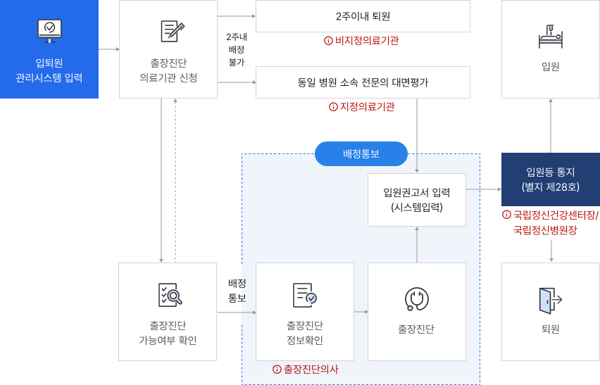

법 제43조에 의해 환자가 입원해 있는 입원병원 정신건강의학과 전문의 소견과 서로 다른 의료기관 소속인 전문의 소견이 일치해야 2주 이상 입원이 가능한 제도
근거법령
정신건강복지법 제43조 보호의무자에 의한 입원등
시행령 제18조 입원등 기간 연장심사 청구기간
시행규칙 제34조 보호의무자에 의한 입원등
제35조 보호입원등에 따른 진단을 위한 시행방안
추가진단의사 업무
보호입원을 한 사람은 입원병원의 전문의 1명으로부터 진단을 받아 입원하였기 때문에, 2주 이내에 다른 전문의( 국립·공립의 정신의료기관 또는 보건복지부장관이 지정하는 정신의료기관에 소속된 전문의) 1명에 의한 추가 진단 실시
추가진단 업무 흐름도

입퇴원 관리시스템 입력
출장진단 의료기관 신청
2주내 배정불가
2주이내 퇴원
비지정의료기관
동일 병원 소속 전문의 대면평가
지정의료기관 → 입원권고서 입력(시스템 입력)
출장진단 가능여부확인 → 배정통보
배정통보
출장진단 정보확인
출장진단의사
출장진단
입원권고서 입력(시스템 입력)
입원등 통지(별지 제28호)
국립정신건강센터장/국립정신병원장
입원
퇴원